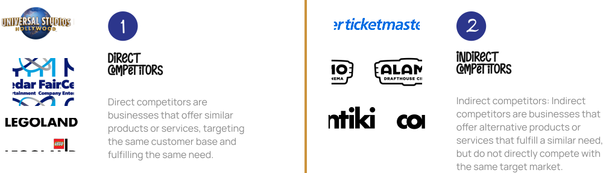

I was the lead Interviewer for some interviews and note taker for others
We chose to conduct a usability case study on the Walt Disney World website because of its widespread popularity and importance as a key platform for millions of visitors. Our goal was to identify areas for improvement, enhance user satisfaction, and optimize the overall user experience, ultimately benefiting both Disney and its website visitors.
Performing a heuristic evaluation was crucial to assess the usability of the Walt Disney World website. By applying recognized usability principles, we systematically identified potential issues and areas for improvement. This evaluation method provided valuable insights into the website's design strengths and weaknesses, informing recommendations to enhance usability and optimize the user experience. You can find the insights from the heuristic evaluation in the presentation below
We chose three direct and three indirect competitors to gain a comprehensive understanding of the competitive landscape surrounding the Walt Disney World website. Analyzing direct competitors allowed us to benchmark against industry standards and identify areas of differentiation, while exploring indirect competitors provided insights into market shifts and emerging trends. This comparative analysis helped us identify best practices and potential areas of improvement for the website.
Implementing a screener was crucial for our study to ensure the selection of participants who met our specific criteria. By using a screener, we were able to identify individuals who had relevant experiences, knowledge, or demographics that aligned with our research objectives.
This enabled us to gather targeted and valuable insights from participants who could provide in-depth feedback and perspectives on the usability of the website. The screener helped us streamline the participant recruitment process and ensured that our study focused on individuals who could provide meaningful contributions to our research findings. You can find the document down below!
One of the tools most moderators use during usability tests is a usability script or moderator's guide. The script is an essential aid to communication. For us as moderators, it provides a way to impart key information.
If you would like to access the moderator script we used, the link is below.
We conducted 6 interviews/ usability tests. Some were in person while some were online.

Information Architecture: Interview data revealed that the lack of a standard information architecture (IA) made it difficult for participants to navigate the site naturally.
Create a simple main menu/navigation bar with standard menu-tab layout for web. Additionally, be intentional with hierarchy within sub-tab options to ensure that corresponding elements are where they are expected to be found.
User Flow: Throughout the test, user repeatedly expressed confusion about the way they progressed through the website, often commenting on the process not making intuitive sense.
Create a simple, intuitive journey for users to purchase tickets on the site, from finding where to purchase tickets to checking out. Unnecessary and redundant information should be eliminated. Critical details like cart subtotals should be visible throughout.
Users encountered various moments where error messages would appear, and they reported that the error messages and preventative status messages could be improved.
Make all error messages and status messages useful for users, including solutions within error messages and communicative prevention strategies to prevent user errors.
For the ticket purchase process, which contained the main bulk of our usability tasks, we found that there were various points of confusion that participants encountered.
Use data to inform what a natural flow was expected to be to purchase tickets, including consolidating steps and language, including all necessary information on one page, and simplifying the entire ticket purchase process.
I would like to express my deep gratitude to Professor Natalie Dare, my research supervisor, for her patient guidance, enthusiastic encouragement, useful critiques of this research work, advice, and assistance in keeping our progress on schedule. I would also like to thank my fellow classmates, and all the participants in our interviews and usability tests.